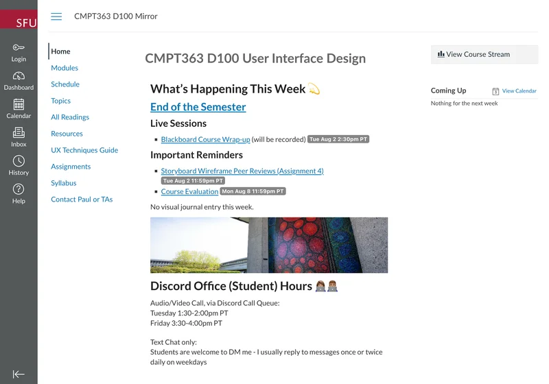
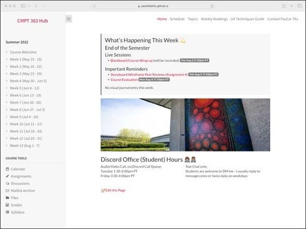
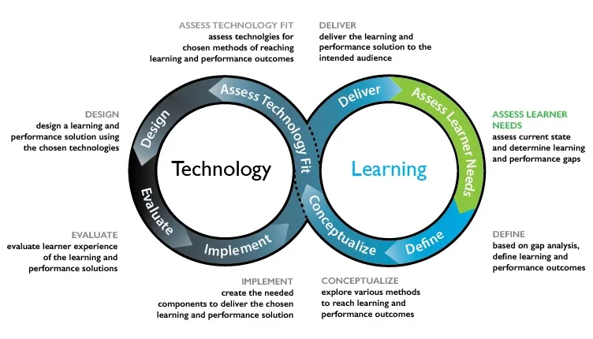

About Paul
Paul Hibbitts designs and builds open-source software that turns Markdown into modern, self-managed websites for educators, digital publishers, and content creators – drawing on over 25 years of experience in software interaction design, UX consulting, and higher education, across more than 140 software projects.
How It Started
Before focusing on open-source publishing tools, Paul spent many years teaching user interface design, including redesigning SFU's CMPT-363 User Interface Design course for online delivery. In keeping with an early embrace of open education, the Canvas LMS course remains public, alongside earlier course hubs built with Docsify and Grav CMS.


That teaching work is also where the Learning + Technology Development Process Model (Hibbitts & Travin, 2015) originated, cited in Tony Bates' open textbook Teaching in a Digital Age.

What People Are Saying
Educators, publishers, and open-source users have shared their experience with these tools – read the full testimonials.
Open Source Philosophy
Can people love open-source projects the way they love their favourite music or book? That positive feeling – for users and contributors alike – drives how Paul views and creates software. Paul leads with outcomes over features, and strives to make tools both enjoyable and valuable in every open-source project. Read the full Building Open Source Projects with a Positive Vibe: 8 Practical Guidelines, or see that philosophy in action across the open-source projects on this site.
A related piece looks at how that same focus carries into documentation: A Dual-Purpose Framework for Better Open Source Documentation.
For teams that need more direct support with these tools, Paul offers a few professional services alongside this open-source work.